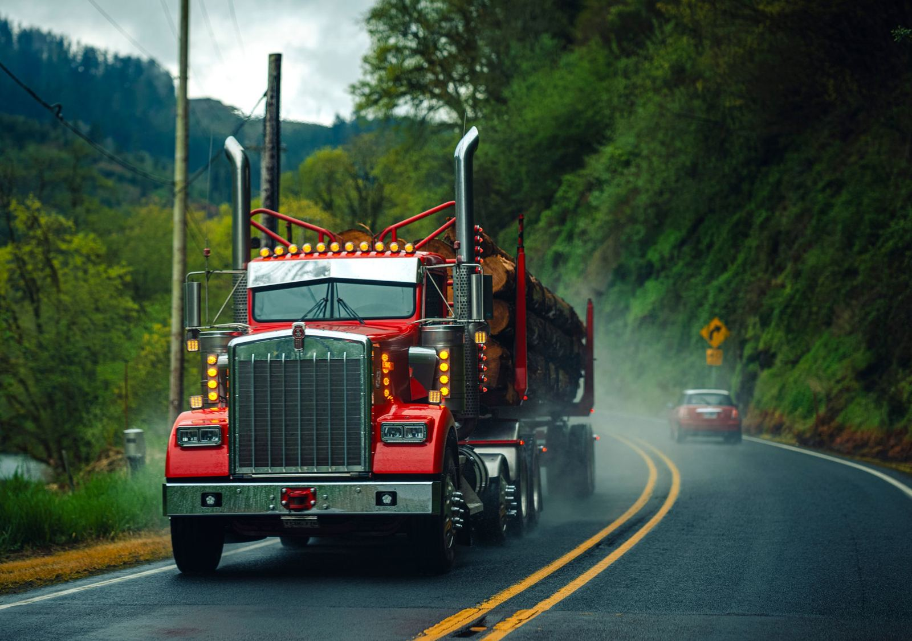
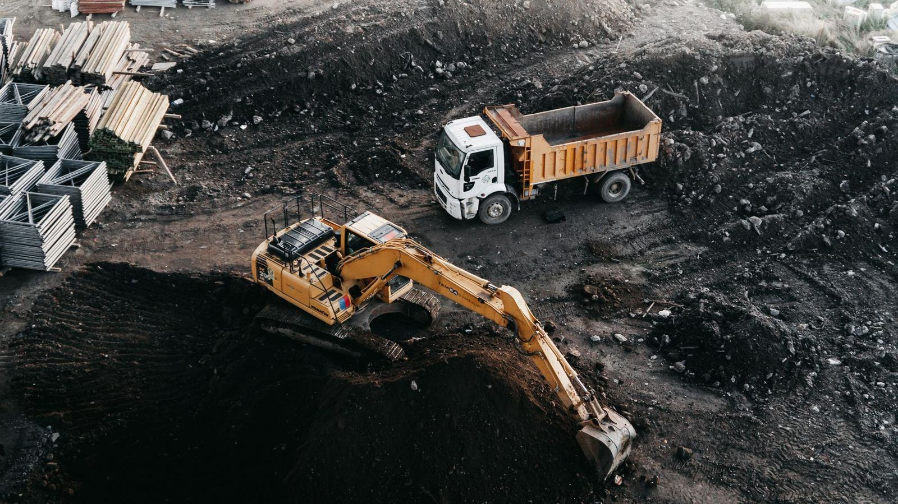
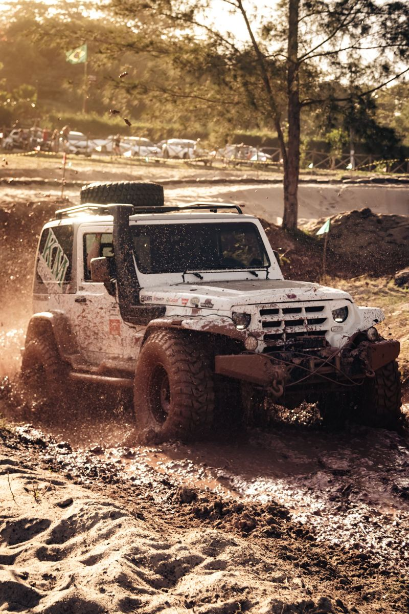
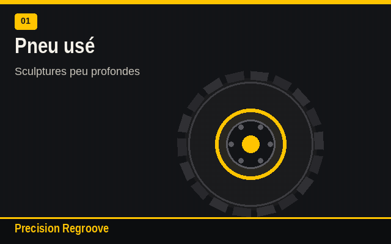

Une meilleure traction
On optimise le dessin de la sculpture pour retrouver de l’adhérence — essentiel à la productivité et à la sécurité.
Regroovage de pneus · Camions lourds et machinerie · Montréal
Regroovage de pneus pour camions lourds avec pneus recreusables, machinerie lourde et véhicules hors route, dans le Grand Montréal.
Le service
Le regroovage améliore le rendement d’un jeu de pneus et en prolonge la durée de vie, de façon économique.
On optimise le dessin de la sculpture pour retrouver de l’adhérence — essentiel à la productivité et à la sécurité.
On tire le maximum d’un jeu de pneus déjà en service, plutôt que de le retirer trop tôt.
Le résultat : une performance supérieure, à une fraction du prix d’un remplacement.
Applications
Le service s’applique aux camions lourds équipés de pneus recreusables, à la machinerie lourde et aux véhicules hors route.

Pour les flottes dont les pneus sont recreusables.
Photo : Alex Kovshovik, Pexels

Chargeuses, excavatrices et autre matériel de chantier.
Photo : Ikbal Alahmad, Pexels

Là où la traction fait la différence.
Photo : Wallace Silva, Pexels
Le geste
On recreuse le dessin d’un pneu encore utilisable pour rétablir la profondeur des sculptures.

Les sculptures se sont affaissées ; la traction diminue.
On retrace et on recreuse le dessin, sans remplacer le pneu.
Une nouvelle profondeur, à une fraction du coût d’un pneu neuf.
Le technicien
Daniel Boloten est technicien en mécanique automobile licencié, avec des décennies d’expérience en entretien et en réparation.
Il compte plus de 20 ans en regroovage de pneus : il sait comment optimiser le dessin d’une sculpture pour améliorer la traction et prolonger la durée de vie du pneu.
Il a déjà dirigé un service de pneus mobile dans le Grand Montréal, où il a entretenu et réparé toutes sortes de pneus — voitures, camions et machinerie lourde.
Pour avoir lui-même conduit de la machinerie lourde en déneigement et en excavation, il sait à quel point une bonne traction compte pour la productivité et la sécurité.
Sur le terrain
Photos prises par Daniel Boloten sur des camions et de la machinerie dans le Grand Montréal.
Joindre Daniel Boloten
Service mobile dans le Grand Montréal. Appelez ou écrivez — le numéro et l’adresse sont les siens.